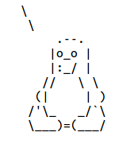

Circuidipity is made possible thanks to free and open-source software. The original source of this website is composed on a mix of devices running Linux using vim and reStructuredText then compiled by Pelican into static HTML files. Images are created and processed using GIMP. Fonts used are Yanone Kaffeesatz and Merriweather.
I use GitHub Pages as my hosting service. Espresso, bananas, serendipity and friends are my duct tape.
Original content is available under a Creative Commons BY-NC-SA Licence. Happy reading and thanks for visiting!

Copyright © 2016 and
CC BY-NC-SA License by
Daniel Wayne Armstrong
Find me at daniel at circuidipity dot com
Don't miss a thing... updates by
RSS and
Twitter